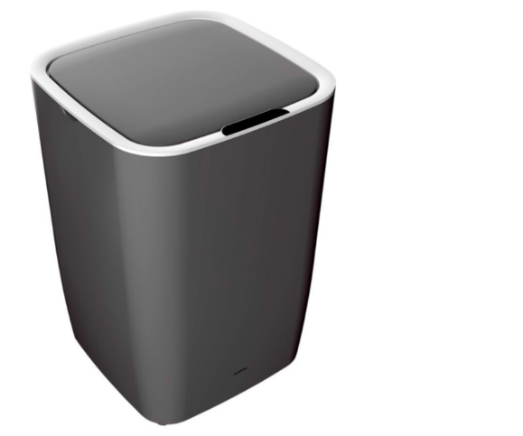
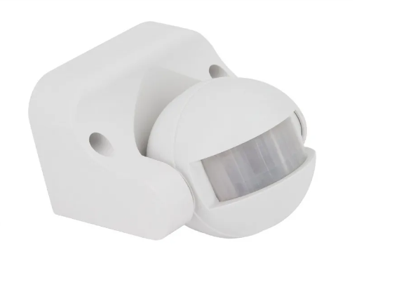
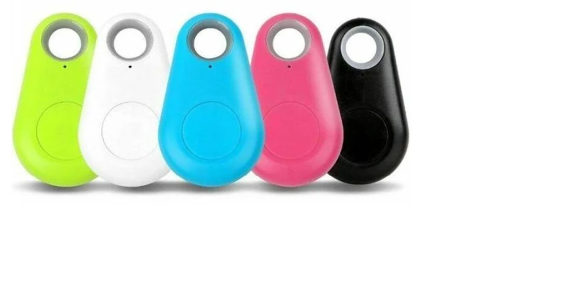
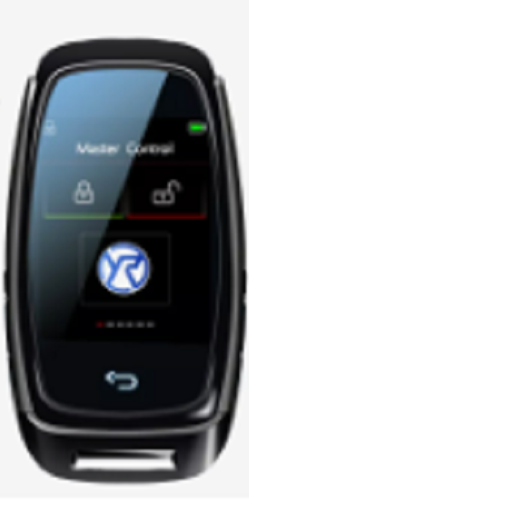
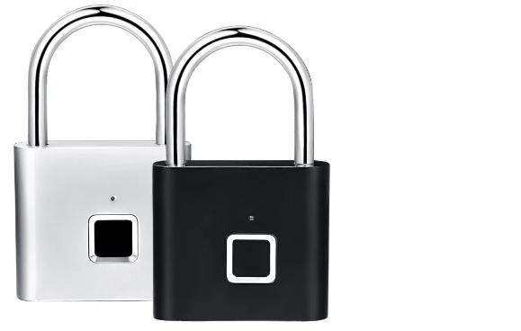

Productos a la venta en SecVrity
A continuación, se mostrarán los productos que SecVrity pone a disposición de sus clientes. Además se clasificarán los productos según su utilidad y contarán cada uno de ellos conuna pequeña descripción del producto.
Productos domésticos

Cerradura inteligente. Es una cerradura electrónica que se coloca en la puerta, para poder abrir la puerta en la que estea colocada la cerradura, es necesario vincular la cerradura con una llave inteligente.
Papelera con sensor. el funcionamiento de la papelera se lleva a cabo cuando se pasa un objeto cerca del sensor que lleva incorporado, cuando el sensor se activa, la puerta de la papelera se abre, y hasta que no se vuelva a pasar algo cerca del sensor, la puerta de la papelera no se volverá a cerrar.
Sensor de movimiento. Este sensor de movimiento es muy sencillo, se puede vincular a cualquiera de los productos que se venden en SecVrity, y se activan cuando una persona pasa cerca de ellos.
Productos no domésticos
Llavero inteligente. Este llavero sirve para la localización de llaves inteligentes u otros productos de SecVrity.
Llave inteligente. Esta llave inteligente es vinculable a todos los dispositivos a la venta en la web, como pueden ser los llaveros o papeleras inteligentes
. Candados inteligente. Estos candados pueden funcionar de dos maneras, o se vincula el candado con una llave inteligente, para que cuando la llave pase por cerca del candado este se active; o se puede usar mediante el sensor de huella dactilar que lleva incorporado.

Esta obra está bajo una Licencia Creative Commons Atribución-NoComercial 4.0 Internacional.